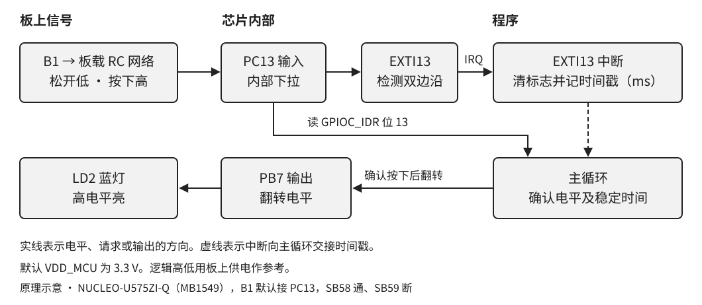
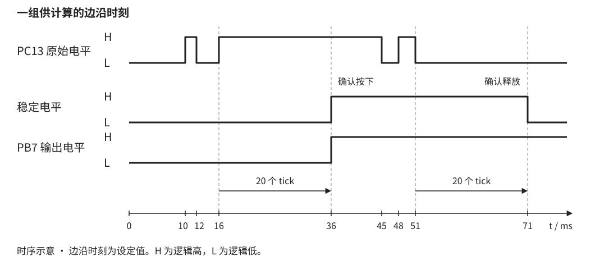

按一下 B1，蓝灯 LD2 翻转一次。一直按住或松开，灯保持原状。学过 C
的变量、函数和
if，就可以用这个实验追踪一次按压如何从引脚变成软件事件，并用调试器说明为什么回调次数可能多于按压次数。
本章选用 NUCLEO-U575ZI-Q（MB1549），目标芯片 STM32U575ZIT6Q，LQFP144 SMPS 封装。采用出厂 3.3 V 配置，SB58 导通、SB59 断开。蓝色 B1 默认接 PC13，松开为低，按下为高。蓝灯 LD2 由 PB7 驱动，PB7 为高时点亮。黑色 B2 用于复位。芯片的 PC13、PB7 分别为封装第 7、136 脚。实验板未接入当前验证环境，实物版本、焊桥和供电要在上板时核对。

B1 的板载滤波网络包含 330 Ω 串联电阻 R39、100 kΩ 下拉电阻 R38 和 100 nF 电容 C84。GPIOC 的内部下拉也参与电路。触点闭合或断开时可能短暂反复接触，RC 网络会改变芯片引脚上看到的边沿。板上一次按压只见到一次上升沿也符合预期。PC13 始终配置为带下拉的输入。
PC13 的电平可由 GPIOC 的 IDR 读出。它还接到 EXTI13
的输入选择器。EXTI13 可从若干端口中选一个编号为 13 的引脚，本章选择端口
C。上升沿和下降沿分别置位各自的挂起位，再经中断屏蔽位和 NVIC 送到
CPU。NVIC 是内核的中断控制器。EXTI13_IRQHandler
是启动向量表给 EXTI13 留的入口名。
边沿描述电平刚刚变化。程序确认的是在一定时间后仍保持的新电平。两种边沿都记录时间戳，每次新边沿重新开始等待。满 20 个 tick 后，主循环读到的电平若与已确认电平不同，就接受新电平。低变高时翻灯并计数，高变低时重新准备接收下一次按压。

按图 2 计算，10 ms 和 12 ms 的边沿都被后续边沿覆盖。16 ms 后再无边沿，35 ms 的差值为 19，36 ms 才达到 20 并确认按下。释放段最后一次边沿在 51 ms，71 ms 确认释放。释放后 LED 仍亮，下一次确认按下才会熄灭。
程序沿用复位时 4 MHz 的 MSIS 和默认分频。HAL_Init() 选
HCLK 作为 SysTick 时钟，HAL_InitTick() 按默认 1 kHz
时基设置 SysTick。标称计数周期是 4000 个 HCLK，重装值为
3999，SysTick_Handler() 每次调用
HAL_IncTick()。阈值 20 以 1 ms tick
为单位，示波器量到的是最后一个 PC13 可见边沿到 PB7 翻转的时间，受 tick
量化、时钟精度和处理延迟影响。软件与板载 RC 的时间效果分别观察。
表 1 本实验使用的寄存器和 SDK 符号
| 功能 | 寄存器字段 | HAL1 配置或读写 |
|---|---|---|
| 接通端口时钟 | RCC_AHB2ENR1.GPIOBEN、GPIOCEN |
__HAL_RCC_GPIOB_CLK_ENABLE()、__HAL_RCC_GPIOC_CLK_ENABLE() |
| PC13 输入并下拉 | GPIOC_MODER[27:26] = 00、GPIOC_PUPDR[27:26] = 10 |
GPIO_MODE_IT_RISING_FALLING、GPIO_PULLDOWN |
| EXTI13 选择 C | EXTI_EXTICR4[15:8] = 0x02 |
HAL_GPIO_Init(GPIOC, &gpio) |
| 两种边沿都请求 IRQ | EXTI_RTSR1、EXTI_FTSR1、EXTI_IMR1
的位 13 置 1 |
GPIO_MODE_IT_RISING_FALLING |
| 读与清边沿挂起 | EXTI_RPR1、EXTI_FPR1 的位 13。写 1
清对应位 |
HAL_GPIO_EXTI_IRQHandler(GPIO_PIN_13)
分开处理两种边沿 |
| 读输入与翻转输出 | GPIOC_IDR 位 13、GPIOB_ODR 位
7、GPIOB_BSRR |
HAL_GPIO_ReadPin()、HAL_GPIO_TogglePin() |
GPIO_PIN_13 是位掩码
0x2000。EXTI13_IRQn 是 CMSIS 中编号为 24
的外部中断，两者分别用于线路位掩码和 NVIC 入口。RPR1 和
FPR1 用写 1
清除指定标志，调试时应观察，不要用读改写的方法清它们。
main() 先检查
HAL_Init()。失败时停在空循环，可在调试器中查看返回值。成功后开端口时钟，先将
PB7 输出锁存值置低，再配置推挽输出，确保灯从熄灭起步。接着配置 PC13
为双边沿中断输入。程序清除 EXTI 两种挂起位，再清 NVIC
挂起，读取开机电平作为初始稳定状态，最后才使能
EXTI13_IRQn。若复位时 B1
被按住，这个初始高电平不会增加按压计数。释放稳定后才能接收下一次按下。
程序清单 1 配置输出和按键输入（project/Core/main.c）
static void Board_GPIO_Init(void)
{
GPIO_InitTypeDef gpio = {0};
__HAL_RCC_GPIOB_CLK_ENABLE();
__HAL_RCC_GPIOC_CLK_ENABLE();
HAL_NVIC_DisableIRQ(EXTI13_IRQn);
HAL_GPIO_WritePin(LED_PORT, LED_PIN, GPIO_PIN_RESET);
gpio.Pin = LED_PIN;
gpio.Mode = GPIO_MODE_OUTPUT_PP;
gpio.Pull = GPIO_NOPULL;
gpio.Speed = GPIO_SPEED_FREQ_LOW;
HAL_GPIO_Init(LED_PORT, &gpio);
gpio.Pin = BUTTON_PIN;
gpio.Mode = GPIO_MODE_IT_RISING_FALLING;
gpio.Pull = GPIO_PULLDOWN;
HAL_GPIO_Init(BUTTON_PORT, &gpio);
}程序清单 2 中断入口及两种回调（project/Core/main.c）
static void Record_Button_Edge(uint16_t pin)
{
if (pin == BUTTON_PIN) {
last_edge_ms = HAL_GetTick();
++g_exti_callback_count;
}
}
void EXTI13_IRQHandler(void)
{
HAL_GPIO_EXTI_IRQHandler(BUTTON_PIN);
}
void HAL_GPIO_EXTI_Rising_Callback(uint16_t pin)
{
Record_Button_Edge(pin);
}
void HAL_GPIO_EXTI_Falling_Callback(uint16_t pin)
{
Record_Button_Edge(pin);
}HAL1 的 GPIO 中断处理函数在调用回调前清对应的挂起位。两个回调共享
Record_Button_Edge()，只写最新边沿时间和回调计数。g_exti_callback_count
统计实际执行的回调，同一边沿类型的多个物理跳变可能合并在一个挂起位中。SysTick
优先级为 4，EXTI13 为
5，数值较小者优先。中断内保持短小，让时基继续运行。
程序清单 3 清挂起并启用 NVIC（project/Core/main.c）
__HAL_GPIO_EXTI_CLEAR_IT(BUTTON_PIN);
__DSB();
HAL_NVIC_ClearPendingIRQ(EXTI13_IRQn);
bool stable_high = HAL_GPIO_ReadPin(BUTTON_PORT, BUTTON_PIN) == GPIO_PIN_SET;
last_edge_ms = HAL_GetTick();
HAL_NVIC_SetPriority(EXTI13_IRQn, 5U, 0U);
HAL_NVIC_EnableIRQ(EXTI13_IRQn);程序清单 4
读取一次一致的状态快照（project/Core/main.c）
for (;;) {
/* Keep the tick, ISR timestamp and pin sample in one short snapshot. */
const uint32_t primask = __get_PRIMASK();
__disable_irq();
const uint32_t now_ms = HAL_GetTick();
const uint32_t edge_ms = last_edge_ms;
const bool pin_high = HAL_GPIO_ReadPin(BUTTON_PORT, BUTTON_PIN) == GPIO_PIN_SET;
const bool edge_pending = __HAL_GPIO_EXTI_GET_IT(BUTTON_PIN);
__set_PRIMASK(primask);
if (!edge_pending && Button_Confirm(&stable_high, pin_high, now_ms, edge_ms)) {
HAL_GPIO_TogglePin(LED_PORT, LED_PIN);
++g_press_count;
}
}last_edge_ms 由中断更新，volatile
让主循环确实读取该值。为了让
tick、上次边沿时间和电平相互对应，主循环短暂屏蔽普通中断，再恢复原来的
PRIMASK。屏蔽期间 EXTI
硬件仍能置挂起位。如果采样后读到挂起位，本轮结果丢弃，由中断处理新边沿后再取样。LED
只由主循环修改，按压计数也只在这里递增。
程序清单 5
确认电平与决定是否翻灯（project/Core/button.c）
bool Button_Confirm(bool *stable_high, bool pin_high,
uint32_t now_ms, uint32_t edge_ms)
{
if ((pin_high == *stable_high) || (now_ms - edge_ms < BUTTON_DEBOUNCE_MS)) {
return false;
}
*stable_high = pin_high;
return pin_high;
}stable_high 由主循环持有。Button_Confirm()
通过指针更新它，返回 true
表示一次确认按下。now_ms - edge_ms 使用
uint32_t 的模运算，正常工作时即使跨过
UINT32_MAX 也能测出短间隔。本例在正常运行时持续轮询，完整的
32 位 tick 周期约 49.7 天，不能据这两个计数器区分跨越整周期的间隔。
Keil.STM32U5xx_DFP.3.2.0。在 Pack
Installer 核对器件 STM32U575ZITxQ。工程使用 HAL1
v1.6.3，配套的 CMSIS、启动文件和驱动置于
project/Drivers。project/MDK-ARM/GPIO_EXTI.uvprojx，选择
GPIO_EXTI。在 Options for Target 核对 Arm Compiler
6、C99、宏 STM32U575xx 和 USE_HAL_DRIVER。在
Asm 页核对 armasm (Arm Syntax)，并在 Linker 页关闭 Use
Memory Layout from Target Dialog，选
GPIO_EXTI.sct。启动汇编只编入一份。TZEN=0 的单镜像方式从用户 Flash
启动。确认板处于这个实验前提。点击 Rebuild，保存实际编译器版本和 Build
Output。检查生成的 AXF 与 map。复位向量应在
0x08000000，读写段和栈堆放在从 0x20000000
开始的 192 KiB SRAM1。若无 map，在 Listing 页启用 Linker Listing
后重建。0x08000000 起覆盖 2 MiB 的 STM32U575 内部
Flash 下载算法，并启用 Reset and Run。下载后复位并运行。Board_GPIO_Init() 返回后观察
GPIOC_IDR 的位 13。分别在松开和按住 B1 时读，应得到 0 和
1。可在 EXTI13_IRQHandler()
入口短暂停一次，确认向量进到了应用函数。随后清除断点并复位，运行以下计数测试。g_press_count、g_exti_callback_count
加入 Watch。释放 B1 并复位，连续缓慢按放 10 次，每次高、低各保持至少 100
ms，再暂停读取。预期每按一次灯翻转，g_press_count 增加
10，灯回到初始熄灭。g_exti_callback_count
记录上下两种边沿，干净波形时预期增加 20，有可见抖动时可能更多。evidence/test_button.c
的合成时间戳复现抖动与短脉冲。它调用同一份
Button_Confirm()，逐个检查 19 和 20
tick、长按、带抖动释放、短脉冲、按住复位所用的初始条件与 tick
回绕。| 观察 | 优先检查 |
|---|---|
B1 动作时 IDR 位 13 不变 |
板型、SB58/SB59、电源、GPIOC 时钟和下拉输入 |
IDR 变化，回调计数不变 |
EXTI13
端口选择和两种触发位、IMR1、NVIC、启动入口符号 |
| 回调有计数，按压始终为零 | SysTick_Handler 是否执行，uwTick
是否递增，是否在暂停状态 |
| 按压计数正确而灯不变 | 检查 PB7 的 MODER、ODR 与 LD2
是否对应实物 |
本次通过主机算法用例、HAL1 接口语法、工程路径与向量静态检查。MDK 目标编译、链接、下载、示波器数据需在装有工具链和连接实板后填写。验证记录
8000000 / 1000 - 1 = 7999，时基仍为 1 ms，软件门限仍为 20
个 tick。改时钟后需要重新配置 SysTick。stm32u5xx_hal_gpio.c 的
HAL_GPIO_Init、HAL_GPIO_EXTI_IRQHandler、HAL_GPIO_ReadPin、HAL_GPIO_TogglePin，stm32u5xx_hal_gpio.h
的挂起位读清宏，stm32u5xx_hal.c 的
HAL_Init、HAL_InitTick 和
HAL_GetTick。CMSIS 设备头 stm32u575xx.h 的
EXTI13_IRQn，以及 startup_stm32u575xx.s 的
EXTI13 和 SysTick 向量。 ST
HAL1 驱动